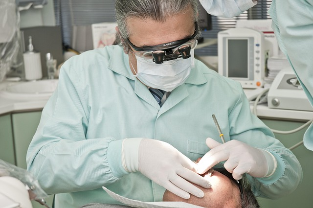

JOURNAL / Planejamento de peeling
Peeling de ATA ou Jessner: o que muda e o que precisa ser confirmado?
ATA (ácido tricloroacético) e solução de Jessner são nomes diferentes para agentes químicos que podem aparecer em abordagens distintas — e até combinadas na literatura. A comparação útil começa pela fórmula e pelo plano reais, não por uma promessa de qual é “mais forte”.

Não são dois nomes para a mesma coisa
Na página do serviço, ATA corresponde ao ácido tricloroacético (TCA). Já uma solução de Jessner é uma combinação de agentes; formulações tradicionais e modificadas podem diferir. Portanto, o nome comercial ou popular não revela sozinho a composição, o objetivo nem a profundidade de uma proposta.
Revisões dermatológicas descrevem peelings de TCA em diferentes profundidades e a solução de Jessner como agente que pode ser usado separadamente ou, em alguns protocolos publicados, antes de TCA. Isso explica por que uma comparação genérica não permite prever a conduta de uma clínica.
O que a literatura pode — e não pode — comparar
Estudos podem avaliar uma formulação, sequência, concentração, população e objetivo específicos. Um resultado de combinação Jessner–TCA não demonstra que todo peeling de Jessner seja combinado com TCA, nem que um serviço chamado ATA siga aquele protocolo. Também não prova superioridade universal para acne, pigmentação ou fotoenvelhecimento.
“Mais profundo” ou “mais intenso” não significa automaticamente melhor. Profundidade pretendida, tipo de queixa, condição e tom de pele, histórico de manchas e cicatrização e recuperação esperada precisam entrar na decisão profissional.
Compare o plano, não só o rótulo
Antes de consentir, peça que a profissional explique em linguagem clara:
- qual agente e formulação estão sendo propostos, incluindo se existe combinação;
- qual queixa específica o plano pretende abordar e como ela foi avaliada;
- qual profundidade é pretendida, quais riscos relevantes foram considerados e como a recuperação pode variar;
- quais alternativas existem e por que seriam mais ou menos adequadas ao objetivo;
- quais instruções escritas e canal de contato serão fornecidos para o período posterior.
Este material não fornece receita, concentração, camadas de aplicação, preparo ou recomendação para escolher um agente. Esses detalhes dependem do produto, do protocolo e da avaliação presencial.
Histórico de pigmentação merece conversa individual
Conte se sua pele costuma deixar marcas após espinhas ou irritação, se houve procedimento recente, se há inflamação ativa, quais medicamentos e produtos estão em uso e se você já teve cicatrização alterada. Isso não permite prever sozinho a resposta, mas ajuda a profissional a avaliar riscos e alternativas. Não suspenda remédios nem inicie ativos por conta própria antes de um peeling.
Referências e limites
As fontes descrevem categorias e combinações estudadas; nenhuma identifica a fórmula, profundidade ou sequência oferecida nesta clínica.
Conteúdo educativo, sem recomendação individual. A indicação, os agentes e os cuidados precisam ser explicados pela profissional que avaliou você.
Vamos conversar sobre o seu cuidado?
Leve suas dúvidas para uma conversa individual com Franciele Sofiati. A avaliação considera sua história e o que faz sentido para você.